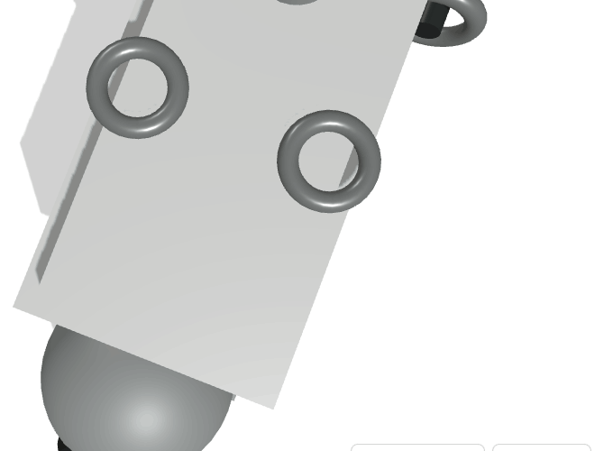
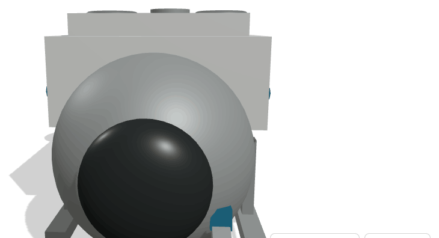
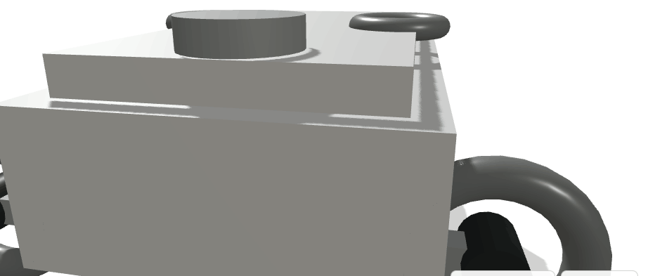

OpenDrone_AQM_I
AQUÁTICO · CIVILSubmersível não tripulado de investigação e intervenção em grande profundidade, com esfera de pressão frontal, bloco de flutuação e manipulador. Desenho inspirado nos submersíveis de exploração de grandes fundos, adaptado a trabalho autónomo continuado.




Objectivo
Cartografar, monitorizar e preservar o mar português — a maior plataforma continental da União Europeia — e apoiar a instalação e manutenção de cabos submarinos e sensores de fundo.
Capacidades
- Cartografia e inspecção de fundo em alta resolução
- Inspecção e reparação assistida de cabos submarinos
- Monitorização de habitats e de fauna marinha
- Recolha de amostras com manipulador
- Instalação e recuperação de sensores de fundo
Tecnologia
Sonar multifeixe e câmaras de alta sensibilidade; iluminação LED de profundidade; manipulador de seis eixos; navegação acústica com posicionamento relativo ao fundo; classificação automática de espécies e de anomalias.
Impacto esperado
Soberania científica sobre o mar nacional e serviço exportável de inspecção de cabos, um mercado em crescimento acelerado. Liga directamente institutos de investigação marinha e universidades ao hub industrial.
Dados de referência
